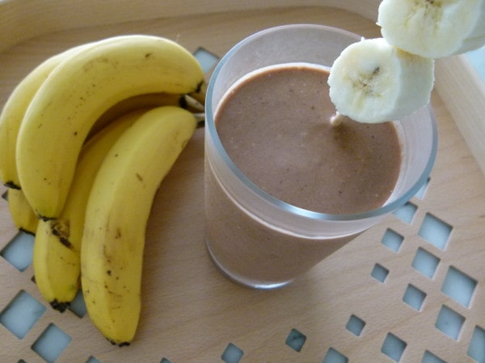

Peanut Butter Banana Protein Smoothie

My favorite smoothie: PB Banana Protein
Most of the ingredients are as my mom calls them "eyeballed," so drink at your own risk.
- 1 banana
- 1-2 tbsp peanut butter
- 1/4 cup nuts (mom uses cashews, walnuts and almonds)
- 1/8 cup seeds (mom uses flax seed, pumpkin seed and sunflower seed)
- Protein powder (eyeballed, whatever that means)
- Kale and/or Spinach (eyeballed)
- Milk (Mom uses unsweetened original almond milk)